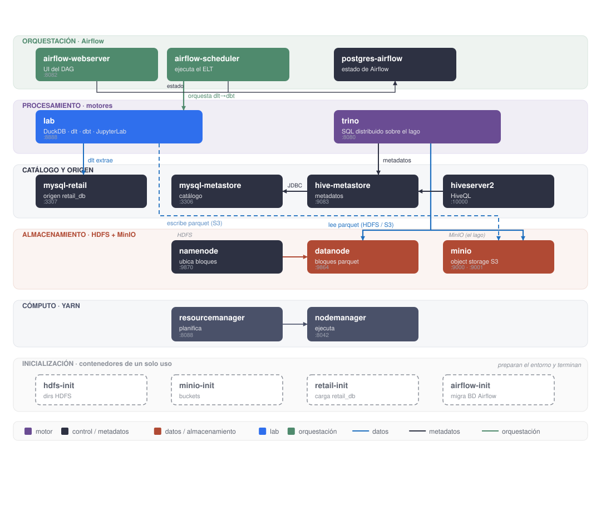
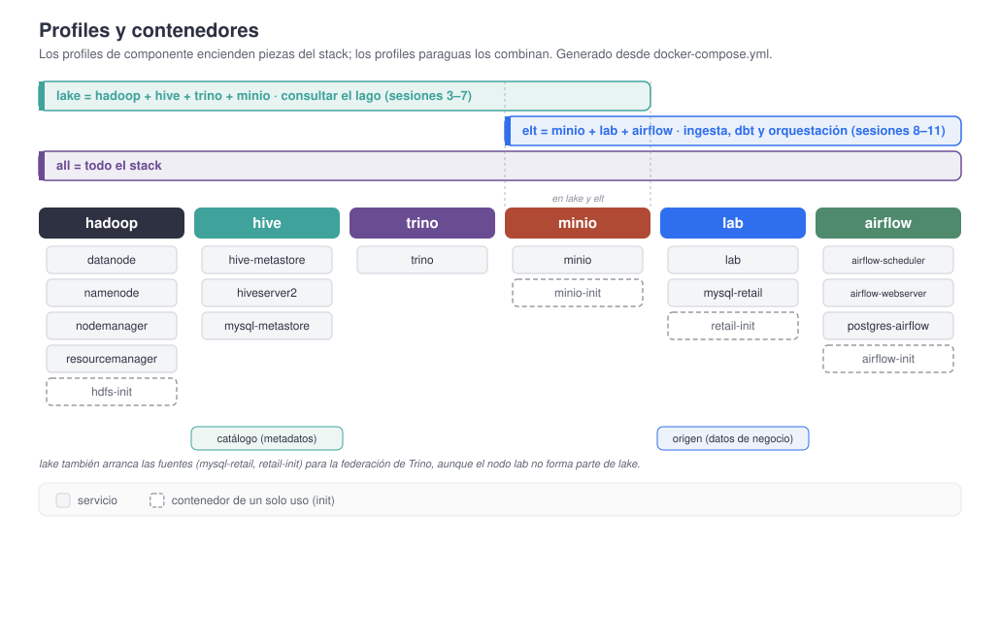

Changelog:
- Nueva creación — Julio 2026
Stack Docker para Ingeniería de datos¶
A lo largo del bloque de ingeniería de datos vamos a necesitar bastantes piezas: un sistema de ficheros distribuido y un almacén de objetos donde dejar los datos, un catálogo que sepa qué tablas hay y dónde viven, uno o varios motores para consultarlos, y un orquestador que lo coordine todo. En vez de instalar cada herramienta por separado, las levantamos mediante Docker Compose, de manera que con un único comando tengamos el entorno completo y reproducible.
La clave de este montaje es que nada arranca por defecto: todos los servicios están detrás de profiles. Encendemos sólo las piezas que necesitamos en cada sesión, lo que ahorra memoria y evita levantar Hadoop entero cuando sólo queremos trastear con DuckDB.
Un stack docente, no de producción
Este montaje prioriza que las cosas funcionen a la primera en el aula. Hemos desactivado los permisos de HDFS, los servicios de Hadoop corren como root y ni JupyterLab ni MinIO piden credenciales robustas. En un entorno real ninguna de esas decisiones sería aceptable, pero aquí nos ahorran fricción para centrarnos en lo que nos interesa.
Arquitectura¶
El stack se organiza en capas. Arriba, la orquestación con Airflow; debajo, los motores que ejecutan nuestro trabajo; después el catálogo y el origen de datos; luego el almacenamiento, que aquí tiene dos sabores (HDFS y MinIO); y por último el cómputo de YARN. Aparte quedan varios contenedores que se ejecutan una sola vez para dejar el entorno preparado.

Si nos fijamos en las flechas, hay tres tipos de tráfico y conviene tenerlos claros desde el principio:
- Las flechas oscuras son metadatos: Trino le pregunta al metastore qué columnas tiene una tabla y en qué ruta están sus ficheros.
- Las flechas azules son datos: una vez conocida la ruta, el motor va directamente a por los ficheros al
datanodeo a MinIO. - Las flechas verdes son orquestación: Airflow dispara la tubería dlt → dbt que se ejecuta en el nodo
lab.
Esta separación entre dónde está el dato y el dato en sí es la idea central de un lago de datos, y la volveremos a encontrar en Athena sobre S3 con el catálogo de Glue.
Puesta en marcha¶
Necesitaremos Docker con Docker Compose v2 y unos 8 GB de memoria disponibles.
Este stack tiene bastantes servicios y rara vez los necesitamos todos a la vez: en la sesión de motores de consulta nos interesan HDFS, Hive y Trino, mientras que en las de ingesta y transformación sólo hacen falta MinIO y el nodo de DuckDB/dlt/dbt. Para no arrancar de más, todos los servicios están detrás de profiles de Compose. Esto tiene una consecuencia importante: un docker compose up a secas no arranca nada; hay que indicarle qué profile queremos.
Por ejemplo, para arrancar el stack completo haríamos:
docker-compose --profile all up -d
Profiles disponibles¶
Hay dos niveles. Los profiles de componente encienden una pieza concreta del stack:
| Profile | Servicios | Para qué |
|---|---|---|
hadoop |
namenode, datanode, resourcemanager, nodemanager, hdfs-init | HDFS + YARN |
minio |
minio, minio-init | Object storage (el lago) |
hive |
mysql-metastore, hive-metastore, hiveserver2 | Catálogo de Hive |
trino |
trino | Motor de consulta sobre el lago |
lab |
mysql-retail, lab, retail-init | DuckDB + dlt + dbt (y retail_db) |
airflow |
postgres-airflow, airflow-init, airflow-webserver, airflow-scheduler | Orquestación del ELT |
Por encima hay tres profiles paraguas que combinan los anteriores, para no tener que recordarlos sesión a sesión:
| Profile | Equivale a | Para qué |
|---|---|---|
lake |
hadoop + minio + hive + trino | Consultar el lago (sesiones 3 a 7) |
elt |
minio + lab + airflow | Ingesta, dbt y orquestación (sesiones 8 a 11) |
all |
todo el stack | Levantarlo entero |
A continuación se muestra un diagrama de cómo se relacionan los profiles de componente y los profiles paraguas, y qué servicios comparten:

Las fuentes viajan con lake
Además de los cuatro componentes, lake arranca también mysql-retail y retail-init. El motivo es que en la sesión de motores de consulta Trino federa contra retail_db mediante su conector MySQL, así que la fuente tiene que estar disponible. El nodo lab en sí, en cambio, no forma parte de lake.
Arrancar según la sesión¶
Así pues, el primer paso es elegir qué profile queremos levantar según la sesión que vayamos a trabajar:
# Ingesta, dbt, ELT y orquestación (sesiones 8 a 11): MinIO + nodo lab + Airflow
docker-compose --profile elt up -d
# Consultar el lago (sesiones 3 a 7): HDFS + Hive + Trino
docker-compose --profile lake up -d
# Todo el stack
docker-compose --profile all up -d
# Estado y logs
docker compose ps
docker compose logs -f hive-metastore trino
Los profiles son combinables. Por ejemplo, en la sesión de motores de consulta, para comparar Trino y DuckDB sobre el mismo lago, añadimos el nodo lab al escenario lake:
docker-compose --profile lake, lab up -d
El arranque está encadenado mediante healthcheck y depends_on, de modo que cada servicio espera a que el anterior esté realmente listo. En el escenario lake el orden es namenode → datanode → hdfs-init → hive-metastore → hiveserver2 → trino; en elt, minio y mysql → retail-init → lab.
Los init acaban en exited
Los contenedores hdfs-init, minio-init, retail-init y airflow-init hacen su trabajo y terminan. Verlos como exited (0) en docker compose ps es lo correcto, no es un error.
Para el día a día, stop/start en vez de down/up
Una vez construido el stack, para apagarlo y encenderlo entre sesiones usa docker compose stop y docker compose start. Reserva docker compose down para cuando quieras recrearlo de cero, porque elimina también la red y los contenedores.
Servicios y puertos¶
Una vez arrancado, según el profile activo tendremos disponibles algunas de estas interfaces:
| Servicio | Puerto | Interfaz |
|---|---|---|
namenode |
9870 | http://localhost:9870 |
datanode |
9864 | http://localhost:9864 |
resourcemanager |
8088 | http://localhost:8088 |
nodemanager |
8042 | http://localhost:8042 |
minio |
9001 | http://localhost:9001 (consola) · 9000 (API S3) |
trino |
8080 | http://localhost:8080 |
lab |
8888 | http://localhost:8888 |
airflow-webserver |
8082 | http://localhost:8082 |
hiveserver2 |
10002 | http://localhost:10002 |
hive-metastore |
9083 | Thrift |
mysql-metastore |
3306 | MySQL (catálogo) |
mysql-retail |
3307 | MySQL (origen retail_db) |
Los contenedores¶
Vamos a recorrer cada pieza explicando qué hace y en qué sesión la utilizamos.
namenode y datanode¶
Forman HDFS. El namenode es el cerebro: no almacena ni un solo byte de nuestros ficheros, sino el árbol de directorios y, para cada fichero, la lista de bloques que lo componen y en qué nodos están. El datanode es donde sí viven los bloques, y los sirve directamente a quien se los pida.
Cuando un cliente quiere leer un fichero, el namenode le responde con la ubicación de los bloques, y a partir de ahí el cliente habla directamente con el datanode. Este detalle, que parece menor, explica buena parte del comportamiento de HDFS. Hemos fijado la replicación a 1 porque sólo tenemos un datanode; en un clúster real el valor por defecto es 3.
resourcemanager y nodemanager¶
Forman YARN, el gestor de recursos del ecosistema Hadoop. El resourcemanager decide qué trabajos se ejecutan y con cuántos recursos; el nodemanager es quien realmente los lanza.
docker compose exec -it resourcemanager \
hadoop jar /opt/hadoop/share/hadoop/mapreduce/hadoop-mapreduce-examples-*.jar pi 2 10
¿Para qué queremos YARN si vamos a usar Trino?
Para nada imprescindible, y de hecho Trino no lo usa. Lo mantenemos porque es la forma más directa de ver cómo se planifica y ejecuta un trabajo distribuido en el ecosistema Hadoop clásico, que es justo lo que estudiamos en la sesión de Hadoop.
minio y minio-init¶
MinIO es un almacén de objetos compatible con la API de S3: nuestro lago de datos "moderno", la alternativa a HDFS. Todo lo que aprendimos sobre S3 aplica aquí, pero corriendo en local. Ofrece una consola web en el puerto 9001 y la API S3 en el 9000.
El contenedor de un solo uso minio-init crea los buckets raw-data, processed y warehouse, que es la separación por capas habitual en un lago (datos crudos, procesados y servidos).
HDFS y MinIO conviven a propósito
Tener los dos almacenamientos nos permite contrastar el enfoque clásico (HDFS, con el cómputo cerca del dato) frente al moderno (object storage, con cómputo y almacenamiento separados). Trino puede consultar tablas que viven en cualquiera de los dos.
mysql-metastore y mysql-retail¶
Tenemos dos contenedores MySQL, y es importante entender por qué están separados, porque cumplen papeles que no tienen nada que ver:
mysql-metastorealoja la base de datosmetastore, donde Hive guarda su catálogo. Aquí sólo hay metadatos: qué tablas existen, qué columnas tienen y en qué ruta viven sus ficheros. Ni un solo dato de negocio.mysql-retailaloja la base de datosretail_db, que hace de origen operacional. Es la base de datos transaccional de la quedltextrae los datos, igual que haríamos en un caso real.
Podríamos haberlo montado todo en un único MySQL, y de hecho es tentador porque son la misma tecnología. Pero mezclar el catálogo con el dato de origen confunde dos conceptos que conviene tener bien diferenciados: una cosa es dónde apuntan las tablas y otra muy distinta de dónde vienen los datos. Separarlos también hace que cada profile sea preciso: mysql-metastore sólo aparece donde hay catálogo (hive, lake), y mysql-retail sólo donde se necesita el origen (lab, elt, airflow, lake).
hive-metastore¶
Es el catálogo. Guarda, para cada tabla, su esquema de columnas, el formato de los ficheros y la ruta donde se encuentran. Lo interesante es que no almacena datos: sólo apunta a ellos, tanto si viven en HDFS como en MinIO.
Su valor está en que es un catálogo compartido. Una tabla creada desde Trino es inmediatamente visible desde HiveServer2, y lo mismo ocurriría con Spark, tal y como veremos en la sesión de conectividad y catálogo.
El driver JDBC no viene incluido
La imagen oficial de Hive no incorpora el conector de MySQL. Por eso el stack construye una imagen propia que añade mysql-connector-j a /opt/hive/lib. Si alguna vez montas un metastore desde cero y ves errores de driver no encontrado, ya sabes por dónde van los tiros.
hiveserver2¶
Nos permite lanzar HiveQL mediante JDBC, típicamente con beeline. Es la puerta de entrada "clásica" al catálogo y la usamos en las sesiones de Hive I y Hive II.
docker compose exec -it hiveserver2 beeline -u "jdbc:hive2://localhost:10000/"
SHOW DATABASES;
SELECT count(*) FROM retail.orders;
trino¶
Trino es un motor de consultas SQL distribuido pensado para el lago de datos. Se conecta al metastore para saber qué tablas hay y dónde están, y después lee los ficheros directamente de HDFS o MinIO. Su gran virtud es la federación: puede consultar en la misma sentencia datos que viven en sistemas distintos, incluido retail_db en MySQL.
docker compose exec -it trino trino
CREATE SCHEMA hive.demo
WITH (location = 'hdfs://namenode:8020/user/hive/warehouse/demo.db');
CREATE TABLE hive.demo.nation WITH (format = 'PARQUET') AS
SELECT * FROM tpch.tiny.nation;
SELECT count(*) FROM hive.demo.nation;
Con estas tres sentencias hemos hecho el recorrido completo: Trino ha escrito ficheros parquet, ha registrado la tabla en el metastore de Hive y ha vuelto a leerla.
lab¶
Es nuestro nodo de trabajo, y probablemente el que más usaremos. Contiene las tres piezas de un flujo ELT moderno:
- dlt para la extracción y carga (EL).
- DuckDB como motor analítico donde aterrizan y se consultan los datos.
- dbt para las transformaciones (T).
Incluye además boto3 y el CLI de AWS para hablar con MinIO, JupyterLab en http://localhost:8888 y el CLI de DuckDB, de modo que podemos trabajar tanto con cuadernos como con SQL puro.
Lo utilizamos en las sesiones de formatos de datos, SQL analítico con DuckDB, del HDFS al object storage y en las sesiones dedicadas a dbt.
Contenedores nativos en Apple Silicon
Las imágenes de Hadoop y Hive sólo se publican para amd64, así que en un Mac con chip M se ejecutan emuladas. Las de lab, mysql, minio, trino, Airflow y Postgres, en cambio, son multiarquitectura y corren de forma nativa.
airflow¶
Es nuestro orquestador. Mientras que en el nodo lab lanzamos el ELT a mano (primero dlt, luego dbt), Airflow nos permite encadenar esos pasos en un DAG, programarlos, reintentarlos si fallan y ver de un vistazo qué se ha ejecutado y con qué resultado. Lo trabajamos en las sesiones dedicadas a la orquestación del pipeline.
El profile airflow levanta cuatro contenedores:
| Contenedor | Función |
|---|---|
postgres-airflow |
Backend de metadatos (Postgres 16) |
airflow-init |
Migra la base de datos y crea el usuario admin |
airflow-webserver |
Interfaz web en http://localhost:8082 |
airflow-scheduler |
Planificador, con LocalExecutor |
La imagen de Airflow incorpora dlt y dbt (vía _PIP_ADDITIONAL_REQUIREMENTS), de modo que las tareas del DAG ejecutan exactamente el mismo pipeline que probamos en el lab. El usuario administrador se crea en el primer arranque con credenciales admin / admin.
Por qué un Postgres aparte para Airflow
Airflow guarda su propio estado (ejecuciones, tareas, conexiones) en una base de datos que consulta y actualiza constantemente. Le damos un Postgres dedicado en lugar de reutilizar el mysql del metastore para no mezclar el estado del orquestador con nuestros datos, igual que haríamos en producción.
hdfs-init, minio-init, retail-init y airflow-init¶
Son contenedores de un solo uso. hdfs-init crea en HDFS los directorios /user/hive/warehouse y /tmp con los permisos adecuados; minio-init crea en MinIO los tres buckets del lago; retail-init carga la base de datos retail_db en MySQL; y airflow-init migra la base de metadatos de Airflow y crea el usuario admin.
Este patrón, un contenedor que prepara el entorno y termina, es muy habitual y evita tener que documentar pasos manuales que alguien acabará olvidando.
El recorrido ELT completo¶
Con el profile elt levantado, podemos recorrer las tres letras de ELT de principio a fin.
COMPOSE_PROFILES=elt docker compose up -d
# EL: dlt replica mysql-retail -> DuckDB, en el esquema retail_raw
docker compose exec lab python /workspace/dlt/mysql_to_duckdb.py
# T: dbt transforma, de staging a marts
docker compose exec -w /workspace/dbt/retail lab dbt run
# Consultamos el resultado
docker compose exec lab duckdb /workspace/data/retail.duckdb \
-c "SELECT * FROM main_marts.ventas_por_ciudad;"
Fijémonos en el reparto de responsabilidades: dlt no transforma nada, se limita a traer los datos tal cual están en origen. Y dbt no sabe nada de extracción, sólo transforma lo que ya está cargado. Esa separación es precisamente lo que distingue ELT de ETL, concepto que introducimos en la sesión de ingesta de datos. Una vez que el recorrido funciona a mano, es cuando lo llevamos a un DAG de Airflow para automatizarlo.
Referencias¶
- Documentación de Trino y su conector Hive.
- Documentación de DuckDB, dbt y dlt.
- Documentación de boto3, el SDK de AWS para Python.
- Imágenes oficiales de Apache Hadoop y Apache Hive en Docker Hub.